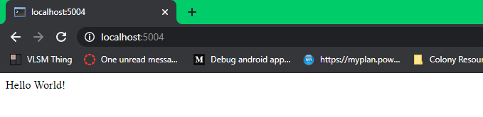

How to use Flask/Heroku
by Rohan Juneja
Posted on May 30, 2020 6:00 PM
Flask is a great server side backend which can be paried with Heroku to host your website
The first step is to download all the required dependencies. You will need to first install Python 3 and Git. Then you need to install dependencies to python using the following command:
pip install gunicorn Flask
After everything is installed, you need to set up your project's file structure in a GitHub repository.

You can get your GitHub Repository to your local system by running the command
git clone github.com/username/repository.git
We will talk about each of these files later. Additionally, you need to set up a Heroku project. I recommend linking your project to GitHub for easy deployment. This way, whenver you push to GitHub, it will automatically deploy to Heroku.

Now, the next step is to set up your basic files. First, requirements.txt should contain all the Python Packages you downloaded which I have listed below:
gunicorn
Flask
This tells Heroku which Python packages it needs to install. The next step is to set up Procfile. Procfile tells Heroku what to execute. Procfile should contain this:
web: gunicorn app:app --log-file=-
This tells Heroku to start the app. The next file to set up is runtime.txt. This just tells Heroku what Python Version to use. In this case, I recommend putting the newest version of Python like so:
python-3.7.7
The next thing to do is to set up app.py, which is our server. We first need to import all the necessary libraries
from flask import Flask, render_template, make_response, redirect
After that, we need to start our server (I am making it run on Port 5004 for local testing)
app = Flask(__name__)
socketio = SocketIO(app)
if __name__ == "__main__":
socketio.run(app, debug=True, port=5004)
Now, we can add a basic redirect, making the root (/) redirect to the index.html file we have in templates. Make sure to keep the if __name__ == "__main__" part on the bottom
@app.route('/')
def index():
return render_template('index.html')
Now you can just add something basic in index.html for testing.
Hello World!
Go into the directory where your project is stored in a command line, and then run the server Python program
cd /path/to/project
python3 app.py
To test if your server is working, try going to localhost:5004 in your browser. You should see what you put in index.html
To deploy what you have to Heroku, just push your code to your GitHub Repo using the following commands:
git add .
git commit -m "commit message"
git pull
After a few minutes, you should be able to see your project at projectname.herokuapp.com.
To see a sample application of how this would work, check out my blog post on Socket.IO